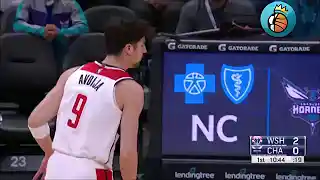
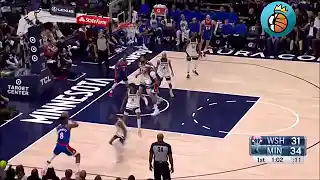
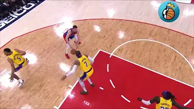
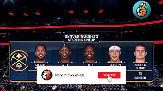
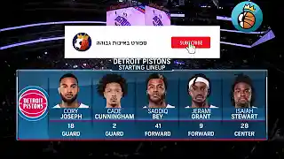
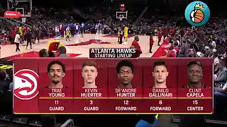

תקצירי המשחקים על פי #מעקבדיה

דני אבדיה נגד שארלוט - #מעקבדיה אחרון לעונה
9 במאי

דני אבדיה נגד מינסוטה - כשדני מקבל את ההחלטות על המגרש #מעקבדיה
1 במאי

דני אבדיה עם שלשת קלאץ' נגד הלייקרס ולברון ג'יימס 2.0 #מעקבדיה
24 באפריל

דני אבדיה נגד דנבר - משחקו הטוב ביותר העונה (ובקריירה) #מעקבדיה
15 בפאריל

דני אבדיה נגד דטרויט - שיא קריירה בנקודות וזריקות! #מעקבדיה
2 לאפריל

דני אבדיה נגד אטלנטה - הגיוון במשחק #מעקבדיה
20 למרץ